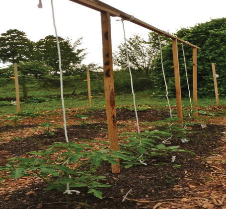
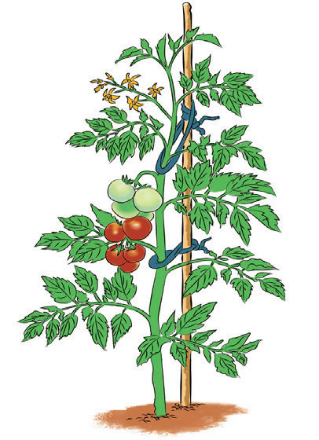

There are also foliar fertilisers, which are water-soluble and come in liquid or powder form. They contain different macro and micronutrients and they are applied to the leaves, where they are absorbed. It is also very important to ask a local extension worker or a competent registered agro dealer about the right amount and the best way to apply fertilisers.
Timing of fertiliser application
- (i)
One week after transplanting: Use a complete NPK fertiliser high in phosphorus e.g., 10:40:10 at the manufacturer’s recommended rate. Repeat once in the 3rd week after transplanting;
- (ii)
When new leaves appear (2-3 weeks after transplanting): Use an NPK fertiliser high in nitrogen e.g., 20:10:10 at the manufacturer’s recommended rate;
- (iii)
When flowers form (4-6 weeks after transplanting): Use a complete NPK fertiliser according to the manufacturer’s recommendation to promote flowering and fruit development. A tomato plant can continue to flower and fruit for 3-4 months.
Trellising and staking in tomatoes
Trellising is a practice of supporting tomato plants using lines held by posts at definite spacing. Posts of approximately 3 m long are placed at an interval of 1.5-2m apart (refer to Figure 8.3 (a)). This is good for indeterminate tomato varieties. Staking is the practice of providing support to tomato plants using poles of wood or metal rods. The stake is placed firmly 15 cm beside the growing plant and the plant is tied to it in stages as it grows (refer to Figure 8.3 (b)). This is suitable for semi-determinate tomato varieties. Trellising and staking aim at keeping plants and fruits firmly off the ground. A combination of poles and ropes to support tomato plants from the sides is also used (refer to Figure 8.3 (c)). Trellising and staking in tomatoes reduce losses from fruit rots when fruits touch the soil and from sunburn when fruits are not shaded by foliage.

